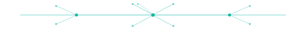

PROVOCAÇÃO #01
Testes tradicionais medem autoimagem.
v2.0 DRAFT
Sistema visual abstrato baseado em redes neurais sintéticas (não cérebro anatômico literal). Aplica em LPs, posts, emails, dividers, watermarks. Tudo monocromático em verde V1 #14B8A6 com alphas. Veta cérebro 3D realista, lâmpada+cérebro, "cérebro com engrenagens".
SVG vetorial 600×420 com 23 nodes + 35 edges em opacidades escalonadas. Tileable e escalonável. Path canônico: brands/electia/assets/visual-language/neural-mesh-pattern.svg
O Electia mostra quem cada colaborador realmente é — e onde deveria estar.
Ver demonstração
Linha horizontal com 3 nodes principais ramificando em dendritos pra cima/baixo. Marca transição entre seções com mais intenção que um <hr> genérico. Path: brands/electia/assets/visual-language/synapse-divider.svg
O Electia cruza 6 teorias científicas. Cada colaborador recebe um relatório narrativo que combina DISC, Tipologia Cognitiva, Eneagrama, Big Five, Le Senne e Motivadores.

Módulos situacionais N1-N4 testam comportamento sob pressão — não autoimagem. É a única forma de ver o que a pessoa faz quando ninguém está olhando.
Pra hero secundários, página /mentor-ai, capas de blog e materiais editoriais que precisam de "cérebro" com profundidade fotográfica. SVG vetorial daria amador. Fonte: Pexels/Unsplash com tratamento filter electia-subtle (já documentado no aurora-hero-v1).
Imagens de neurônios em microscopia fluorescente (verde/cyan natural). Tipo "purkinje cell" ou "cortical neurons". Aplicar filter electia-subtle pra forçar paleta teal.
Render artístico de rede neural com partículas, linhas conectoras e bokeh. Sempre dessaturar pra teal monochrome. Movimento lento opcional.
Textura de coral cerebral (espécie marinha) lembra córtex sem ser literal. Usar como background de página com overlay 70%. Tratamento dark + teal.
Estilo "data viz" com nodes conectados, esparso, fundo dark. Funciona em hero, divisor de seção full-width, capa de PDF.
Imagem de cérebro humano fotorrealista — sai de jaleco branco, parece neurocirurgia. Tom errado pro Electia (gestão, não clínica).
Briefing §6 veta explicitamente. É clichê visual de "AI consultancy" anos 2010. Pula.
Outro clichê. Sai banal e infantiliza a marca pra C-Level.
Toda stock photo de "neurociência B2B" usa. Diferenciação zero. Risco de parecer "neuromarketing wellness" — não é o tom.
// Hero secundário /mentor-ai — neural mesh denso "abstract neural network visualization, dense interconnected nodes, teal monochrome (#14B8A6) on deep graphite (#0B0E14), particles, soft bokeh, cinematic depth of field, technical aesthetic, no text, no human face, ultra wide composition" — aspect 16:9 // Capa de blog técnico "micrograph-style fluorescent neuron, teal and dark graphite palette, single bright node center, fading dendrites outward, scientific aesthetic, no anatomy diagrams" — aspect 16:9 // Background de página /saude-mental (cuidado: tom mais sereno) "abstract synapse particles drifting slowly, deep teal monochrome, calm zen composition, no medical imagery, no human silhouette, soft glow, generous negative space" — aspect 21:9 // Avatar do Mentor AI no chat "single neuron node with 6 dendrite branches, geometric abstract, teal (#14B8A6) solid on transparent, clean vector style, centered composition, 1:1 ratio"
5 regras pra qualquer aplicação de sinapses/cérebro no sistema visual Electia.
@media (prefers-reduced-motion: reduce) desliga.